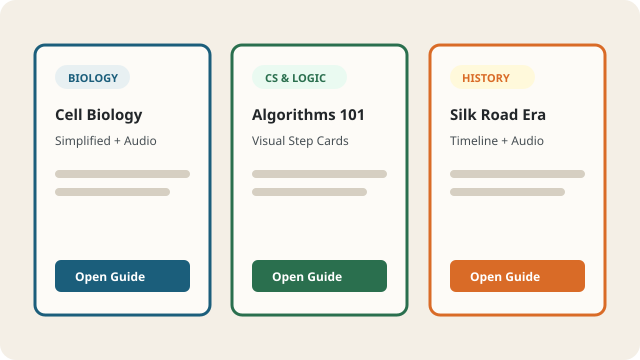

Adapted University Study Materials Catalog (Interactive CRUD)
Manage & Browse Dyslexia-Friendly Course Packets
The LexiLearn Study Library allows students and instructors to create, read, update, and delete adapted university study guides in real time. All study modules are stored safely in localStorage (lexilearn_materials) and rendered dynamically via modular JavaScript.
Our open educational structure is inspired by global accessible publishing standards, including the Bookshare Accessible Online Library and Universal Design for Learning (UDL) frameworks.

Add New Adapted Study Module
Use the form below to add a new study guide to the catalog or click Edit on any existing card to update its properties:
Available Adapted Course Modules
Filter modules by keyword, adaptation status, or reading complexity level. Cards dynamically display conditional visual borders and badges based on their boolean and reading-level properties: